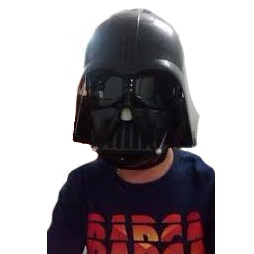

<header class="site-header">

  <div class="wrapper">
    {%- assign default_paths = site.pages | map: "path" -%}
    {%- assign page_paths = site.header_pages | default: default_paths -%}
    {%- assign titles_size = site.pages | map: 'title' | join: '' | size -%}
    <!-- <a class="site-title" rel="author" href="{{ "/" | relative_url }}">{{ site.title | escape }}</a> -->

    {%- if titles_size > 0 -%}
          <nav class="navbar navbar-transparent navbar-color-on-scroll fixed-top navbar-expand-lg" color-on-scroll="100" id="sectionsNav">
            <div class="container">
                <div class="navbar-translate">
                  <a class="navbar-brand" href="#">
                  </a> 
                  <button class="navbar-toggler" type="button" data-toggle="collapse" aria-expanded="false" aria-label="Toggle navigation">
                  <span class="sr-only">Toggle navigation</span>
                  <span class="navbar-toggler-icon"></span>
                  <span class="navbar-toggler-icon"></span>
                  <span class="navbar-toggler-icon"></span>
                </button>
              </div>
              <div class="collapse navbar-collapse">
                <ul class="navbar-nav ml-auto">
                  <li class="nav-item">
                    <a class="nav-link" rel="tooltip" title="" data-placement="bottom" href="https://github.com/rafaelferrezla" target="_blank" data-original-title="Follow on Github">
                     <i class='fa fa-github'></i>
                    </a>
                  </li>
                  <li class="nav-item">
                    <a class="nav-link" rel="tooltip" title="" data-placement="bottom" href="https://www.linkedin.com/in/rafaelferrez" target="_blank" data-original-title="Follow on Linkedin">
                      <i class="fa fa-linkedin"></i>
                      
                    </a>
                  </li>
                  <li class="nav-item">
                    <a class="nav-link" rel="tooltip" title="" data-placement="bottom" href="https://twitter.com/rafaelferrezla" target="_blank" data-original-title="Follow on Twitter">
                      <i class="fa fa-twitter"></i>
                    </a>
                  </li>
                </ul>
              </div>
            </div>
          </nav>

          <div id="particles-js" class="page-header header-filter" data-parallax="true" style="background: #000030";></div> <!-- style="background-image: url('../assets/img/city-profile.jpg'); -->
          <div class="main main-raised">
            <div class="profile-content">
              <div class="container">
                <div class="row">
                  <div class="col-md-6 ml-auto mr-auto">
                    <div class="profile">
                      <div class="avatar animated bounce delay-1s">
                        
                      </div>
                      <div class="name animated bounce delay-1s">
                        <h3 class="title">RAFAEL FERREZ <i class="material-icons">verified_user</i></h3>
                        <h6>Unknown</h6>
                        <h6>Engineer Computer's science</h6>
                        <a href="https://github.com/rafaelferrezla" class="btn btn-just-icon btn-link btn-github"><i class="fa fa-github"></i></a>
                        <a href="https://www.linkedin.com/in/rafaelferrez" class="btn btn-just-icon btn-link btn-linkedin"><i class="fa fa-linkedin"></i></a>
                        <a href="https://twitter.com/rafaelferrezla" class="btn btn-just-icon btn-link btn-twitter"><i class="fa fa-twitter"></i></a>
                      </div>
                    </div>
                  </div>
                </div>
                <div class="description text-center animated bounce delay-1s">
                  <p>I´m Venezuelan Engineer &#x2014; Interested in networks and CiberSec &#x2014; Training engineer, people interested also in the security of information systems and the world of malware. With similar content capacity in a self-taught way. Interested in world-class certifications such as CEH, CISSP and currently studying Ruby and RoR. </p>
                </div>

               
                <br>
                <br>
                <br>
                <br>
                <br>

              </div>
            </div>
          </div>
     
    {%- endif -%}

  </div>
</header>
